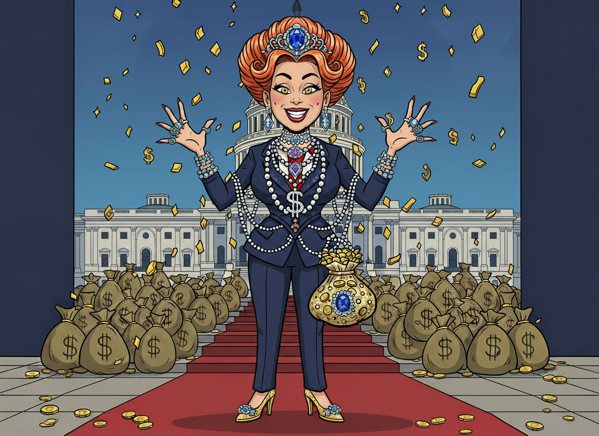
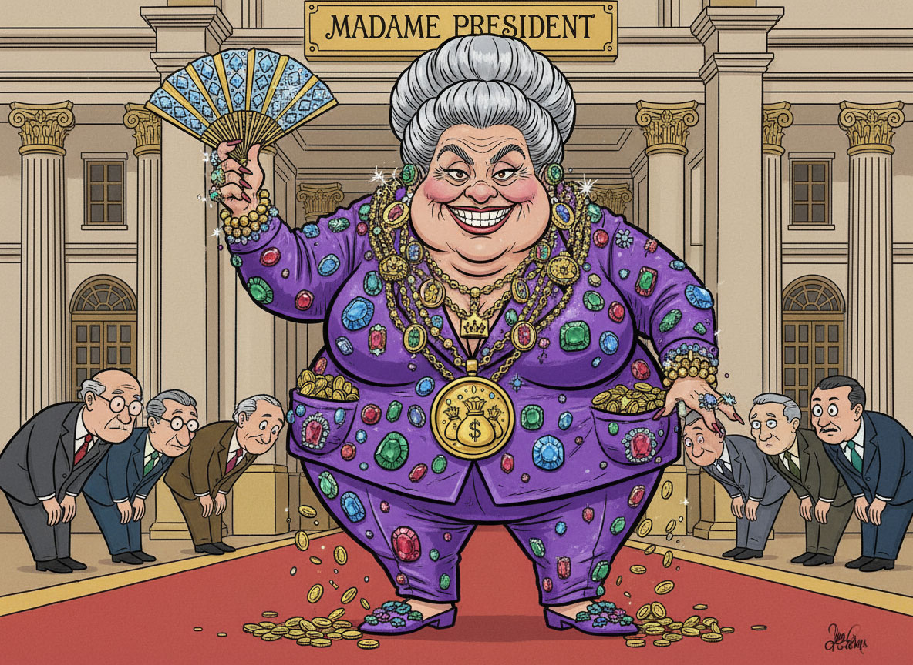

The Tolliticians are greedy politicans who steal prosperity from the working public with new taxes and tolls for the things that used to be free or cheaper.
They create and collect new taxes, tolls and extras fees profitting off of required government services your existing taxes should already pay for!
The Tolliticians strive to control and profit off of everything in your life! ANY transaction or interaction of any kind! Extra tolls, carbon taxes, sneaky fees, excise taxes and new unexpected taxes designed to keep them rich and everyone else beneath them!
They appoint family members and cronies to huge salaried government positions so they can spend and distribute the money they took from you in taxes!
It's theft and extortion made legal for a ruling class like a Robin Hood Story!

AND all of the services and public projects that were supposed to happen?
THEY JUST DON'T HAPPEN!
Roads stay in disrepair, bridges crumble, and public services decline while the Tolliticians profit by trading stocks with insider information!
To defeat them: We MUST pay attention to what politicians are doing! Do not blindly support toll roads or tax increases! Hold them accountable with your vote!
There is an old saying: “Politicians are like diapers; they should be changed often and for the same reason.”